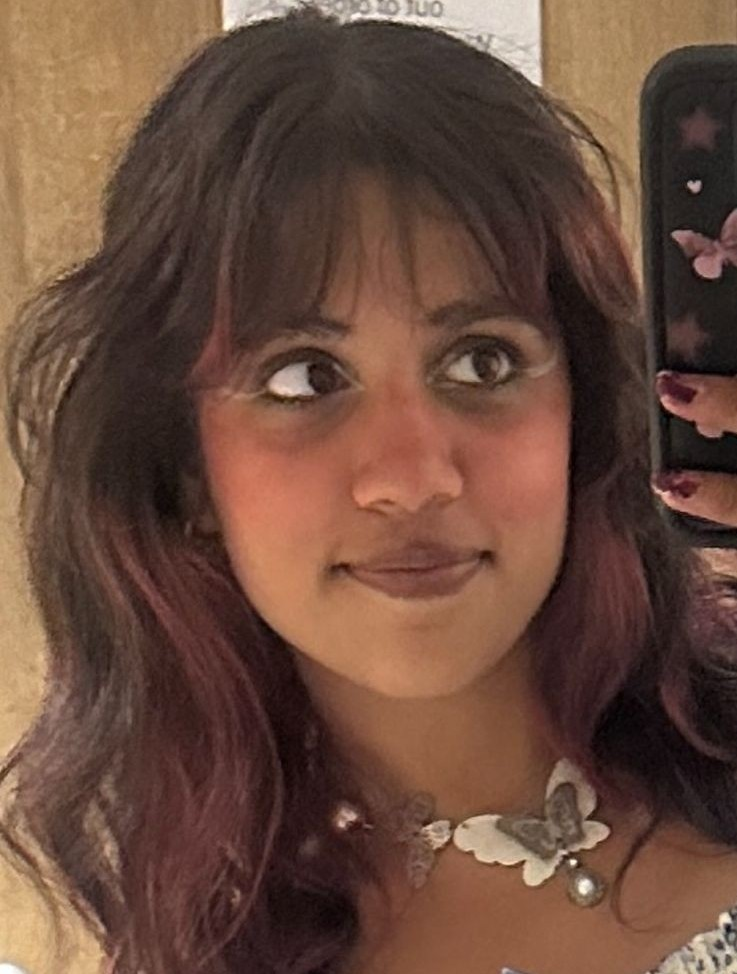

Hi, I'm
Saniya
Ishak
Aspiring Lecturer & Counsellor


About Me
Passionate, bubbly and empathetic, with a natural ability to connect with people and create a supportive environment. Excellent communication skills, both verbal and written, allowing for effective collaboration with children, parents, and colleagues or customers. Known for being approachable and patient, I strive to make a positive impact on people's life. Flexible and adaptable to different positions


 De Monfort University
De Monfort University
 Lilongwe Private School
Lilongwe Private School